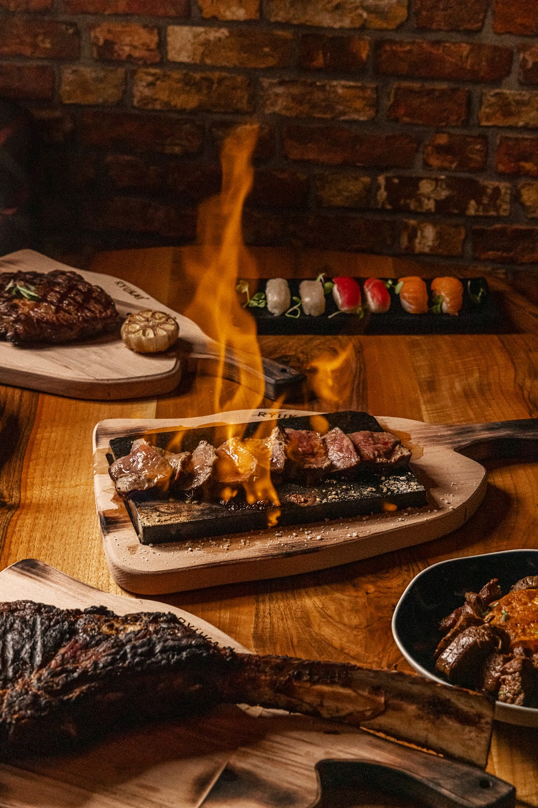
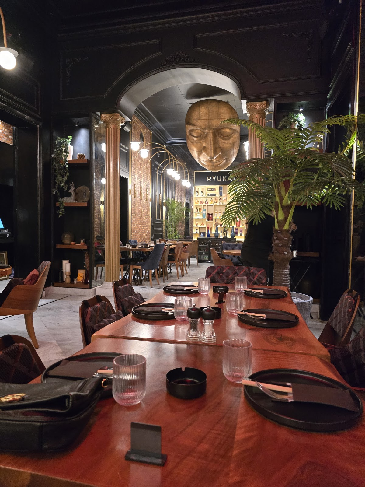
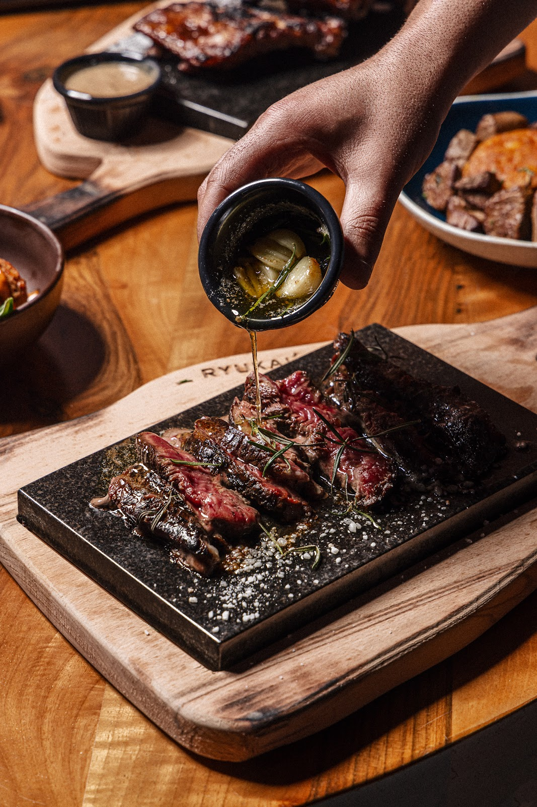
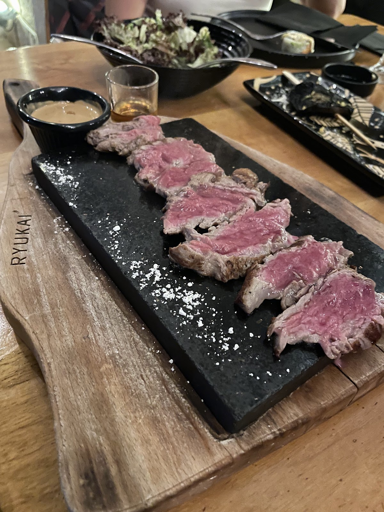
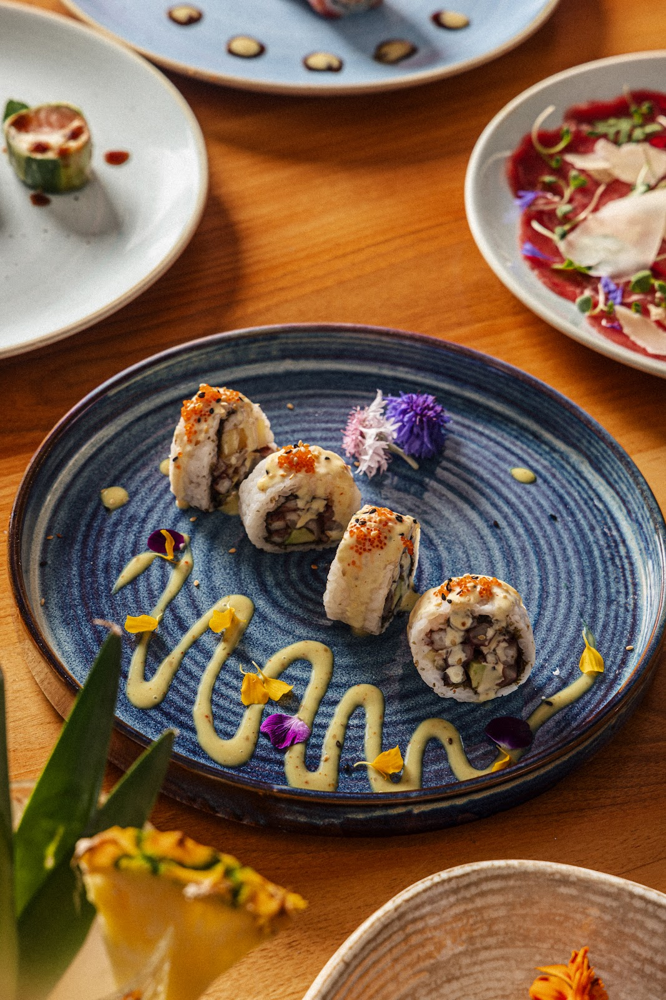
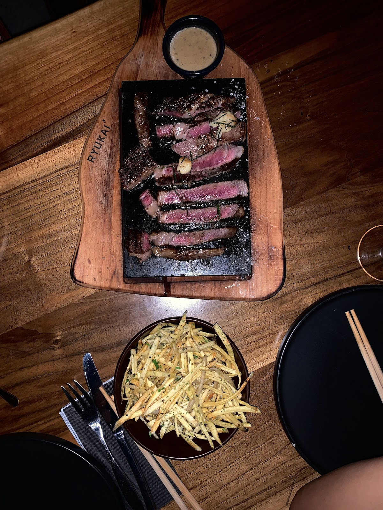

★ 4.7 ·






I can see why Ryukai has built such a great reputation.Roy Chalhoub
The place is really quiet and peaceful, we really enjoyed the food and the ambiance. The waiter is really nice and calm. I would recommend the shrimp Calles flavor of the sea.Marc Archondis
Would easily give this one a 10 out of 10.. we ordered the sun kissed salad, the mango inferno and the pomme pont neuf with their signature dish the fillet steak. Honestly, everything was great.Yara
| 5 PM–12 AM | |
| 5 PM–12 AM | |
| 5 PM–12 AM | |
| 5 PM–12 AM | |
| 5 PM–12 AM | |
| 5 PM–12 AM | |
| 5 PM–12 AM |
Impasse 90, GF, Antelias
+961 81 666 910